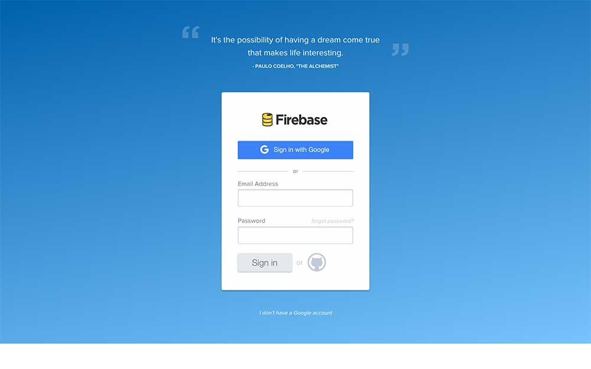
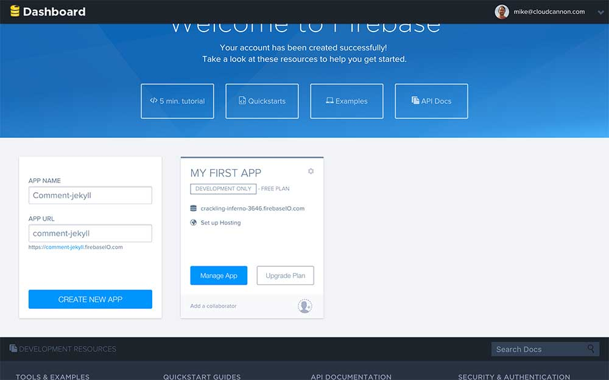
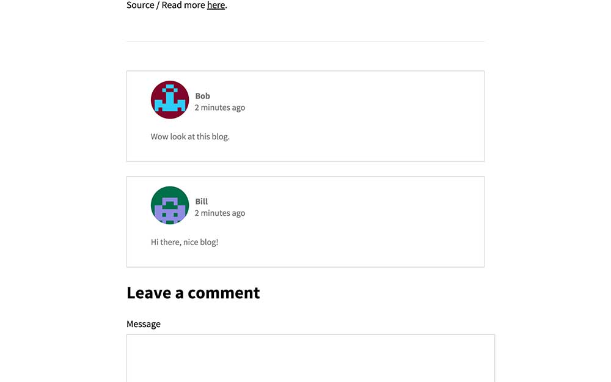
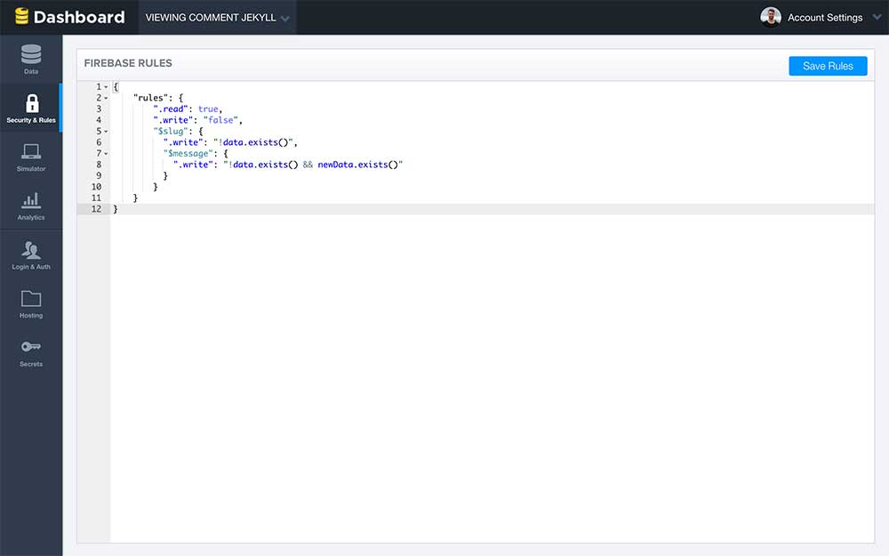

Система комментирования на Firebase
Этот урок о добавлении некоторой функциональности к сайту на Jekyll, которая кажется невозможной: комментариев. Это потому, что у Jekyll нет бэкенд-компонент для сохранения комментариев. Но нам это и не нужно, поскольку мы сделаем всё на фронтенде с помощью Firebase!
Собственные решения обеспечивают больше контроля над дизайном, функциональностью и данными, чем готовые решения, такие как Disqus и плагин комментариев Facebook.
Что такое Firebase?
Firebase — масштабируемый бэкенд, работающий в режиме реального времени. Это позволяет разработчикам создавать приложения с аутентификацией и постоянными данными для статичных сайтов.
Мы собираемся хранить комментарии нашего блога в Firebase и получать их, когда кто-то просматривает статью блога.
Регистрация
Для начала зарегистрируйте аккаунт Firebase.

После регистрации создайте новое приложение для комментариев блога и запишите App URL для дальнейшего использования.

Настройка
Нам нужен ряд библиотек JavaScript для запуска системы комментирования. Firebase сохраняет и извлекает комментарии, jQuery добавляет элементы на страницу, Moment форматирует даты, а blueimp-md5 генерирует MD5. /js/blog.js содержит код нашего приложения для системы комментирования.
Добавьте следующие скрипты выше </body> в _layouts/default.html:
HTML
<script src="https://cdn.firebase.com/js/client/2.2.1/firebase.js"></script>
<script src="https://ajax.googleapis.com/ajax/libs/jquery/1.11.3/jquery.min.js"></script>
<script src="https://cdnjs.cloudflare.com/ajax/libs/moment.js/2.11.0/moment.min.js"></script>
<script src="https://cdnjs.cloudflare.com/ajax/libs/blueimp-md5/2.1.0/js/md5.js"></script>
<script src="/js/blog.js"></script>Обзор Firebase
Когда посетитель просматривает статью блога мы получаем все подходящие комментарии Firebase.
Посетители оставляют комментарии с именем, адресом электронной почты и сообщением. Мы берём эту информацию, добавляем метку времени и текущую страницу, а затем сохраняем всё в Firebase.
В Firebase данные хранятся в виде объектов JSON. Комментарии хранятся в виде массива объектов для каждой статьи блога.
JSON
{
"/tutorial/2016/01/02/title-tag.html": [
{
"name": "Bill",
"email": "bill@example.org",
"message": "Hi there, nice blog!",
"timestamp": 1452042357209
},
{
"name": "Bob",
"email": "bob@example.org",
"message": "Wow look at this blog.",
"timestamp": 145204235846
}
],
"/announcement/2016/01/01/latest-seo-trends.html": [
{
"name": "Steve",
"email": "steve@example.org",
"message": "First post!",
"timestamp": 1452043267245
}
]
}Реализация
Указатели в Firebase обеспечивают доступ для чтения и записи базы данных. Добавьте указатель на базу данных в /js/blog.js:
JavaScript
var ref = new Firebase("https://<YOUR-APP-ID>.firebaseio.com/");ref даёт нам доступ к корню базы данных. Мы можем получить указатель на статью блога с помощью ref.child ("<путь_к_статье_блога>").
Сохранение комментариев
Путь это отличный способ для идентификации статей блога, но Firebase не поддерживает символы, такие как амперсанд в имени ключа. Чтобы решить эту проблему, добавьте функцию для замены недопустимых символов:
JavaScript
function slugify(text) {
return text.toString().toLowerCase().trim()
.replace(/&/g, '-and-')
.replace(/[\s\W-]+/g, '-')
.replace(/[^a-zA-Z0-9-_]+/g,'');
}Сохраните указатель, используя функцию slugify() и текущий путь.
JavaScript
var postRef = ref.child(slugify(window.location.pathname));Добавим форму для отправки новых комментариев после статьи блога. Введите следующую разметку ниже {{ content }} в _layouts/post.html:
HTML
<h3>Leave a comment</h3>
<form id="comment">
<label for="message">Message</label>
<textarea id="message"></textarea>
<label for="name">Name</label>
<input type="text" id="name">
<label for="email">Email</label>
<input type="text" id="email">
<input type="submit" value="Post Comment">
</form>Для отправки данных в Firebase при отправке формы, переопределим слушателя submit по умолчанию в /js/blog.js:
jQuery
$("#comment").submit(function() {
postRef.push().set({
name: $("#name").val(),
message: $("#message").val(),
md5Email: md5($("#email").val()),
postedAt: Firebase.ServerValue.TIMESTAMP
});
$("input[type=text], textarea").val("");
return false;
});postRef.push() создаёт массив в Firebase, если он не существует, и возвращает указатель на первый элемент. set сохраняет данные в Firebase.
Мы храним MD5 для адреса электронной почты для защиты конфиденциальности комментаторов, поскольку данные общедоступны. Gravatar использует MD5 для отображения изображения профиля.
Вместо new Date().getTime() для метки времени, мы используем Firebase.ServerValue.TIMESTAMP. Это метка времени серверов Firebase, которая позволяет избежать проблем с часовыми поясами и подделкой запросов.
Отображение комментариев
Добавим контейнер для хранения комментариев выше формы комментария в _layouts/post.html:
HTML
<hr>
<div class="comments"></div>В Firebase есть указатель для прослушивания новых комментариев. child_added — это триггер событий для существующих и новых комментариев. Мы используем это же событие для отображения всех комментариев.
child_added возвращает текущий снимок данных. Мы получаем данные из снимка, форматируем их в HTML и добавляем в <div class="comments"></div>.
jQuery
postRef.on("child_added", function(snapshot) {
var newComment = snapshot.val();
$(".comments").prepend('<div class="comment">' +
'<h4>' + newComment.name + '</h4>' +
'<div class="profile-image"><img src="http://www.gravatar.com/avatar/' + newComment.md5Email + '?s=100&d=retro"/></div> ' +
'' + moment(newComment.postedAt).fromNow() + '<p>' + newComment.message + '</p></div>');
});Окончательный файл
Сохраните окончательный файл в /js/blog.js. Измените <YOUR-APP-ID> на идентификатор, записанный ранее.
jQuery
$(function() {
var ref = new Firebase("https://<YOUR-APP-ID>.firebaseio.com/"),
postRef = ref.child(slugify(window.location.pathname));
postRef.on("child_added", function(snapshot) {
var newPost = snapshot.val();
$(".comments").prepend('<div class="comment">' +
'<h4>' + newPost.name + '</h4>' +
'<div class="profile-image"><img src="http://www.gravatar.com/avatar/' + newPost.md5Email + '?s=100&d=retro"/></div> ' +
'<span class="date">' + moment(newPost.postedAt).fromNow() + '</span><p>' + newPost.message + '</p></div>');
});
$("#comment").submit(function() {
postRef.push().set({
name: $("#name").val(),
message: $("#message").val(),
md5Email: md5($("#email").val()),
postedAt: Firebase.ServerValue.TIMESTAMP
});
$("input[type=text], textarea").val("");
return false;
});
});
function slugify(text) {
return text.toString().toLowerCase().trim()
.replace(/&/g, '-and-')
.replace(/[\s\W-]+/g, '-')
.replace(/[^a-zA-Z0-9-_]+/g,'');
}Завершённая система комментирования выглядит следующим образом:

Опробуйте рабочую демонстрацию здесь. Откройте два окна, оставьте комментарий и вы увидите, что он появится в двух окнах сразу.
Безопасность
На данный момент любой желающий может редактировать или удалять комментарии. Для базовой безопасности мы сделаем правило, что только посетители могут добавлять комментарии. В Firebase откройте вкладку Security and Rules:

Существующие правила разрешают глобальные операции чтения и записи. Чтобы предотвратить удаление или запись данных Firebase, если они уже существуют, измените .write на следующее:
{
"rules": {
".read": true,
".write": "false",
"$slug": {
".write": "!data.exists()",
"$message": {
".write": "!data.exists() && newData.exists()"
}
}
}
}Полный набор вариантов аутентификации позволяет построить нечто более сложное.
Готовый сайт
С помощью нескольких библиотек и 31 строки на JavaScript мы получили полнофункциональный бэкенд для комментариев блога, работающих на статичном сайте.
Это подводит нас к финалу данного руководства. За три коротких урока мы перешли от статичного сайта к обновляемому, живому сайту на Jekyll с нашей собственной системой комментирования.